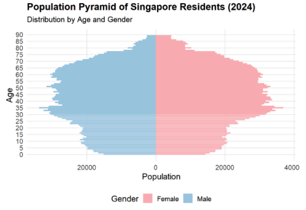
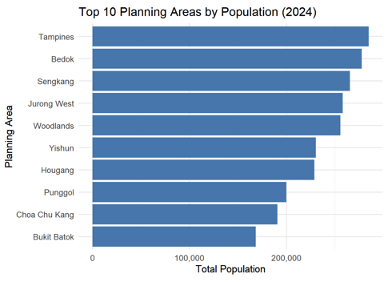
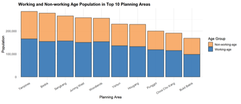

I will be providing a critique of the visualisation created by my classmate, Wang Anqi. This critique will highlight 3 strengths and 3 areas for improvement in her visualisation. Following the critique, I will present a redesigned version of the visualisation based on the feedback provided.
Link to Anqi’s Assignment: https://isss608-25t3-anqi.netlify.app/take-home_ex/take-home_ex01/take-home_ex01
My Critique

Strength 1:
Anqi presented the population distribution of Singapore Residents using a population pyramid, with males on the left and females on the right. This is a commonly used method for visualising a country’s population structure by age group, offering a clear and intuitive overview.
Area of Improvement 1:
Anqi did not group the ages into bins, which makes the visualisation harder to interpret for readers who are interested in specific age ranges.

Strength 2:
Anqi sorted the Planning Areas in descending order of population, making the visualisation easier to read and interpret.
Area of Improvement 2:
Readers are unable to determine the exact population of each Planning Area, as there are no tooltips or data labels displayed in the visualisation.

Strength 3:
Anqi used a stacked bar chart to clearly show the proportion of the working and non-working age population, allowing readers to grasp the breakdown at a glance.
Area of Improvement 3:
Similarly, readers are unable to discern the exact values in the stacked bar charts, as there are no tooltips to display this information.
Codes to Re-create Anqi’s Visualisations
pacman::p_load(tidyverse, ggrepel, patchwork, ggthemes, hrbrthemes,) popu_data <-read_csv("data/respopagesex2024.csv", show_col_types =FALSE)cat("Total number of records in the dataset:", nrow(popu_data), "\n")
Total number of records in the dataset: 60424
# Remove the 'Time' column from the datasetpopu_data1 <- popu_data %>%select(-Time)# Checks for NA in each columncolSums(is.na(popu_data1))
PA SZ Age Sex Pop
0 0 0 0 0
# Here's what the dataset looks like so farpopu_data1
# A tibble: 60,424 × 5
PA SZ Age Sex Pop
<chr> <chr> <chr> <chr> <dbl>
1 Ang Mo Kio Ang Mo Kio Town Centre 0 Males 10
2 Ang Mo Kio Ang Mo Kio Town Centre 0 Females 10
3 Ang Mo Kio Ang Mo Kio Town Centre 1 Males 10
4 Ang Mo Kio Ang Mo Kio Town Centre 1 Females 10
5 Ang Mo Kio Ang Mo Kio Town Centre 2 Males 10
6 Ang Mo Kio Ang Mo Kio Town Centre 2 Females 10
7 Ang Mo Kio Ang Mo Kio Town Centre 3 Males 10
8 Ang Mo Kio Ang Mo Kio Town Centre 3 Females 10
9 Ang Mo Kio Ang Mo Kio Town Centre 4 Males 30
10 Ang Mo Kio Ang Mo Kio Town Centre 4 Females 10
# ℹ 60,414 more rows
# Step 1: Recode "90 and over" to "90"popu_data1 <- popu_data1 %>%mutate(Age =ifelse(Age =="90 and over", "90", Age))# Step 2: Convert Age to integerpopu_data1 <- popu_data1 %>%mutate(Age =trimws(Age),Age =ifelse(Age =="90 and over", "90", Age),Age =as.integer(Age) )popu_data1 <- popu_data1 %>%mutate(Sex =recode(Sex, "Males"="Male", "Females"="Female") )# Here's what the dataset looks like so farpopu_data1
# A tibble: 60,424 × 5
PA SZ Age Sex Pop
<chr> <chr> <int> <chr> <dbl>
1 Ang Mo Kio Ang Mo Kio Town Centre 0 Male 10
2 Ang Mo Kio Ang Mo Kio Town Centre 0 Female 10
3 Ang Mo Kio Ang Mo Kio Town Centre 1 Male 10
4 Ang Mo Kio Ang Mo Kio Town Centre 1 Female 10
5 Ang Mo Kio Ang Mo Kio Town Centre 2 Male 10
6 Ang Mo Kio Ang Mo Kio Town Centre 2 Female 10
7 Ang Mo Kio Ang Mo Kio Town Centre 3 Male 10
8 Ang Mo Kio Ang Mo Kio Town Centre 3 Female 10
9 Ang Mo Kio Ang Mo Kio Town Centre 4 Male 30
10 Ang Mo Kio Ang Mo Kio Town Centre 4 Female 10
# ℹ 60,414 more rows